This is a Quake II source port (based on yquake2 5.11) tuned to look as good as possible while staying playable on six retro Macs spanning 1999–2019. One source tree builds a single fat universal binary (PowerPC G3 + PowerPC G4 with AltiVec + Intel x86_64); the right configuration for your machine is selected automatically at launch via sysctl hw.model. Free and open source under the GPL.
{kind=link}
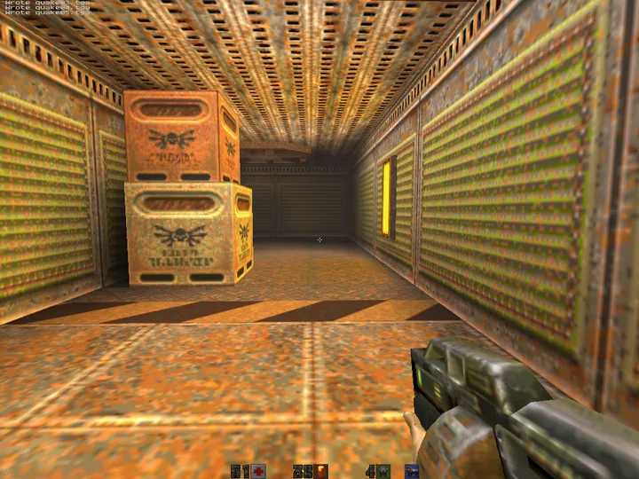
Power Mac G4 · GeForce2 MX{kind=link}
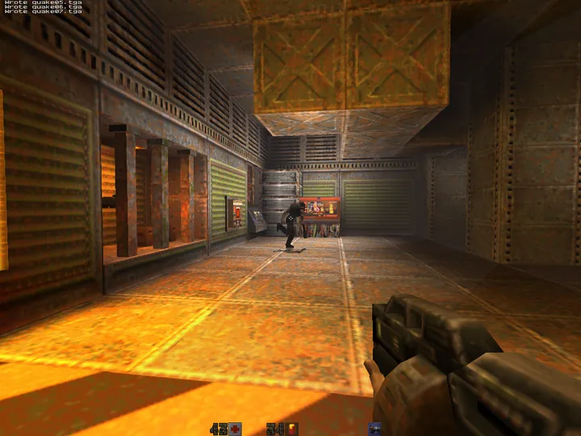
Power Mac G4 · Radeon 9000 Pro{kind=link}
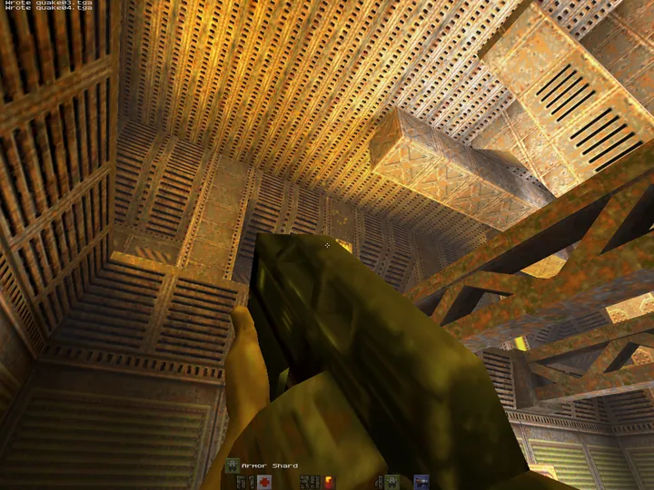
Mac mini G4 · Radeon 9200Supported Macs & operating systems
If you are searching for how to run Quake II on any of these exact machines and OS versions, this port is built and benchmarked for them:
| Machine | CPU | Graphics | Mac OS X |
|---|---|---|---|
| Power Mac G3 (Blue & White / Yosemite, 1999) | 449 MHz PowerPC 750 | ATI Rage 128 16 MB AGP | 10.3.9 Panther |
| Power Mac G4 (Sawtooth AGP, 1999) | 500 MHz PowerPC 7400 | NVIDIA GeForce2 MX 32 MB | 10.4.11 Tiger |
| Power Mac G4 (Quicksilver, 2001) | 733 MHz PowerPC 7450 | ATI Radeon 9000 Pro 64 MB | 10.4.11 Tiger |
| Mac mini G4 (PowerMac10,1, 2005) | 1.25 GHz PowerPC 7447A | ATI Radeon 9200 32 MB | 10.4.11 Tiger |
| Mac mini (Intel Core 2 Duo, 2007) | 2.33 GHz Core 2 Duo | Intel GMA 950 64 MB | 10.7.5 Lion |
| iMac 27" (iMac19,1, 2019) | 3.7 GHz Core i5-9600K | AMD Radeon Pro 580X 8 GB | modern macOS |
The same DMG installs on every supported Mac. It is built on Panther so it mounts on everything from Mac OS X 10.3.9 through the latest macOS, and the .app inside is a fat binary that runs natively as PowerPC on G3/G4 and as Intel x86_64 on Core 2 Duo and newer. PowerPC G5 machines run the G4 AltiVec slice. (Pre-Lion 32-bit-kernel Intel Macs are not supported.)
What makes it different
- One fat universal binary — PowerPC 750 (G3), PowerPC 7400 (G4, with hand-written AltiVec paths) and Intel x86_64, glued with
lipointo a single.app. - Automatic per-machine tuning — at launch the engine reads
hw.modeland applies a configuration profile tuned for that exact computer's CPU and GPU. - Visuals tuned per GPU era — world decals (bullet, blood, scorch), linear GL fog, underwater warp, energy-shell glow on power-ups, lightmapped glass and grates, animated water caustics, alias drop-shadows, trilinear and up to 16× anisotropic filtering, MSAA and dynamic lights where the hardware can take it.
- Stays playable on real hardware — the 1999 Power Mac G3 with an ATI Rage 128 holds ~25 fps at 1024×768 with the full visual stack, and the G4s and Intel Macs clear 60 fps.
- Every tweak is toggleable at runtime so you can A/B individual features on your own Mac without rebuilding.
How to install Quake II on your old Mac
- Download the DMG from the latest release (
Quake2-OldMac-<version>.dmg) and open the disk image. - Copy everything into one folder, e.g.
~/Desktop/quake2/:Quake2.app,ref_gl.so,q2ded, and thebaseq2/folder. - Add your retail data — copy your own
pak0.pak,pak1.pak,pak2.pak(plusplayers/andvideo/) intobaseq2/. Retail Quake II is on Steam and GOG. - Double-click
Quake2.appand play.
On modern macOS the unsigned bundle is quarantined — either right-click → Open, or run xattr -dr com.apple.quarantine ~/Desktop/quake2/Quake2.app. Panther, Tiger and Lion do not need this.
Screenshots across the fleet
{kind=link}
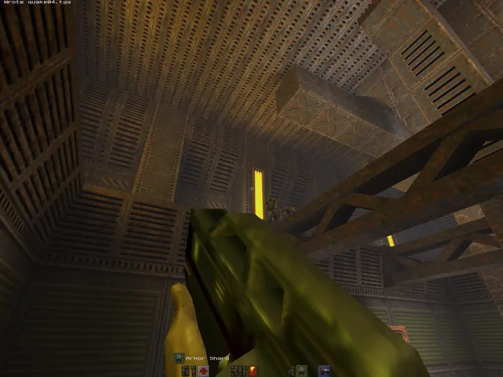
Power Mac G3 · ATI Rage 128 · Panther{kind=link}
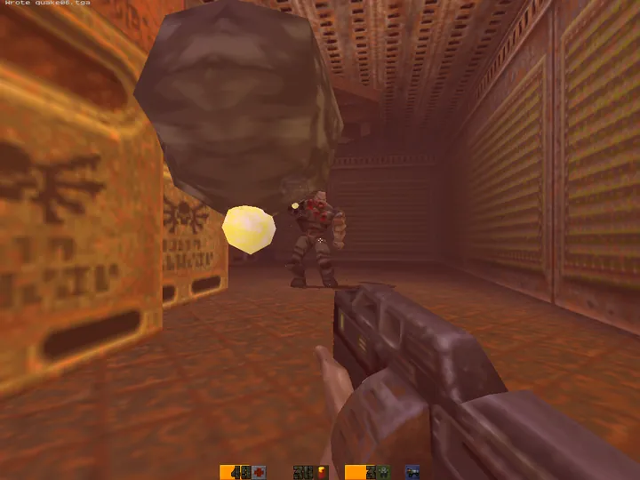
Power Mac G3 · ATI Rage 128 · Panther{kind=link}
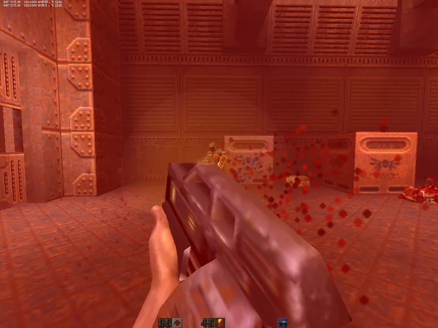
Power Mac G4 · GeForce2 MX · Tiger Power Mac G4 · GeForce2 MX · Tiger{kind=link}
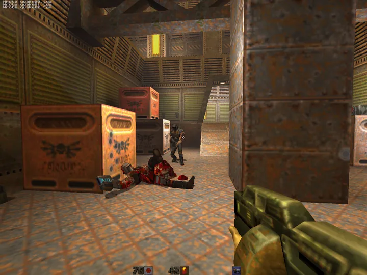
Power Mac G4 · Radeon 9000 Pro · Tiger Power Mac G4 · Radeon 9000 Pro · Tiger Mac mini G4 · Radeon 9200 · Tiger{kind=link}
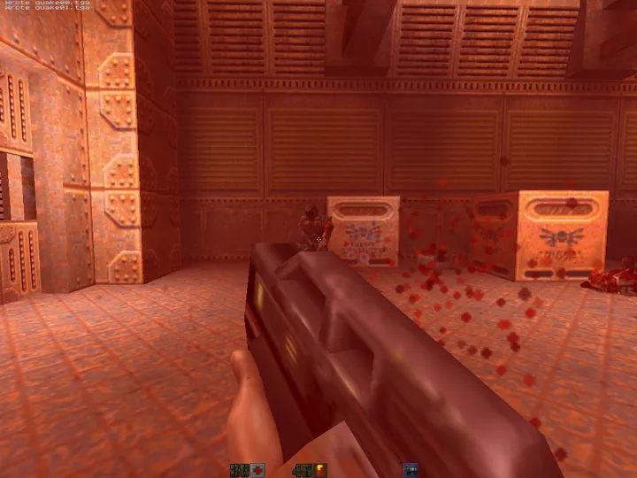
Mac mini G4 · Radeon 9200 · Tiger Mac mini G4 · Radeon 9200 · Tiger
Mac mini G4 · Radeon 9200 · Tiger
{kind=link}
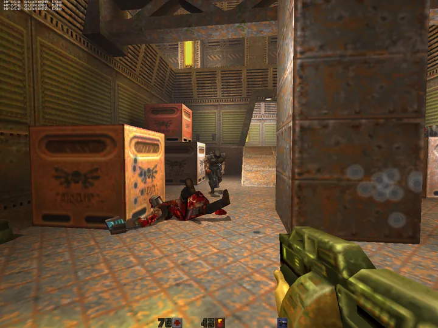
Intel Mac mini · GMA 950 · Lion{kind=link}
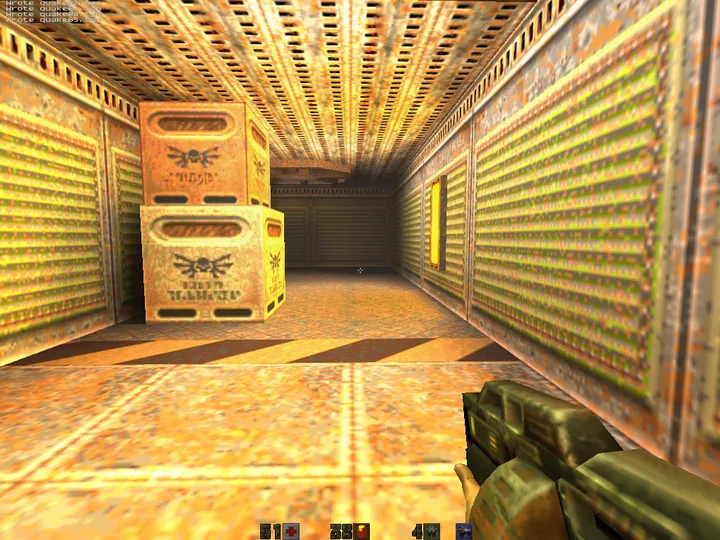
Intel Mac mini · GMA 950 · Lion{kind=link}
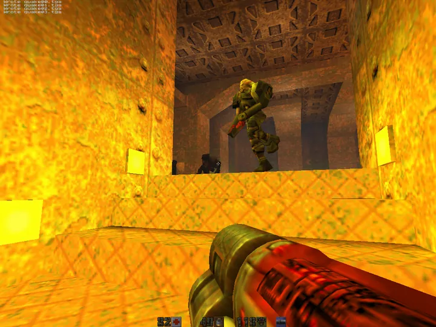
Intel Mac mini · GMA 950 · LionSister projects — vintage Mac id Software ports
Old Mac QuakeSpasm
The same six-machine PowerPC + Intel fleet and tooling applied to the original Quake (QuakeSpasm base). One universal binary for Panther, Tiger, Lion and modern macOS. Project page →
Old Mac Quake III
Quake III Arena (ioquake3) on the same fleet, pinned to the last SDL 1.2 commit so it still runs on Panther and Tiger. Yes — Q3 on a 449 MHz G3.
Mac GLQuake (Classic)
A Retro68 PowerPC CFM port of classic GLQuake — a runnable Quake for Mac OS 8.6 / 9, before OS X.
Source code & documentation
The full source tree, build scripts, benchmark history and engineering notes live on GitHub: github.com/matthewdeaves/old-mac-quake2. It documents the cross-compile pipeline (one Linux box driving Mac cross-builds), the per-machine autoexec configs, the AltiVec and renderer work, and a rolling benchmark CSV tagged by commit. Built on the upstream yquake2 engine; GPL-2.0-or-later.